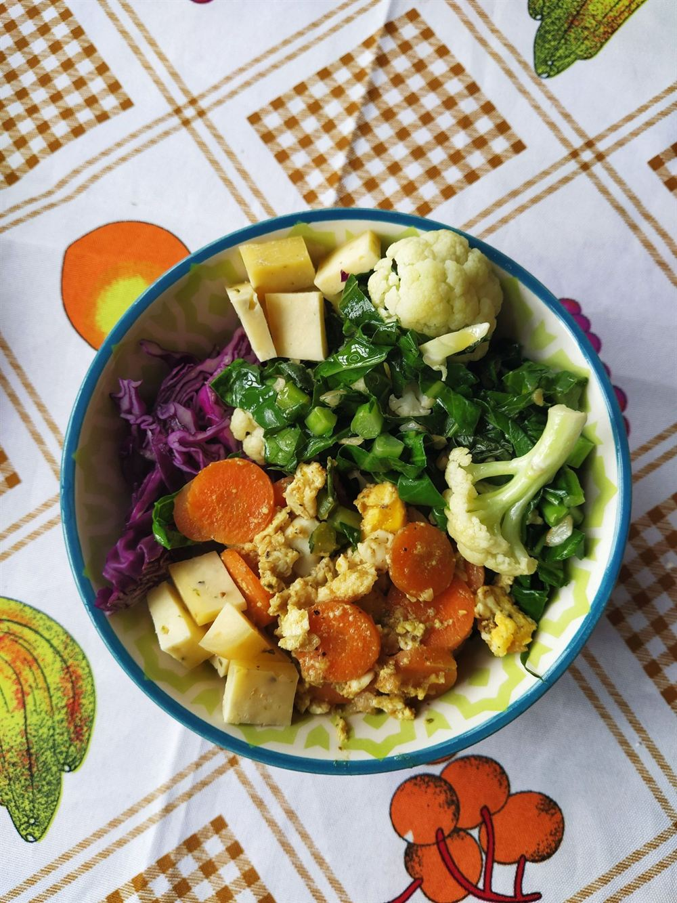
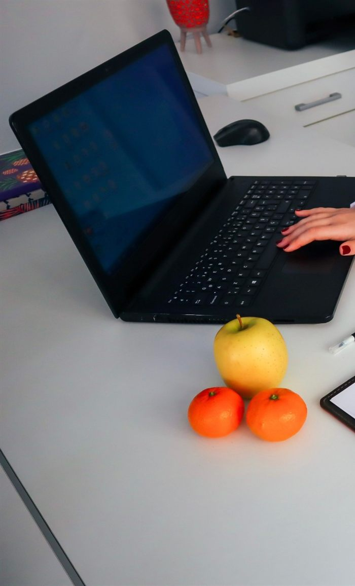
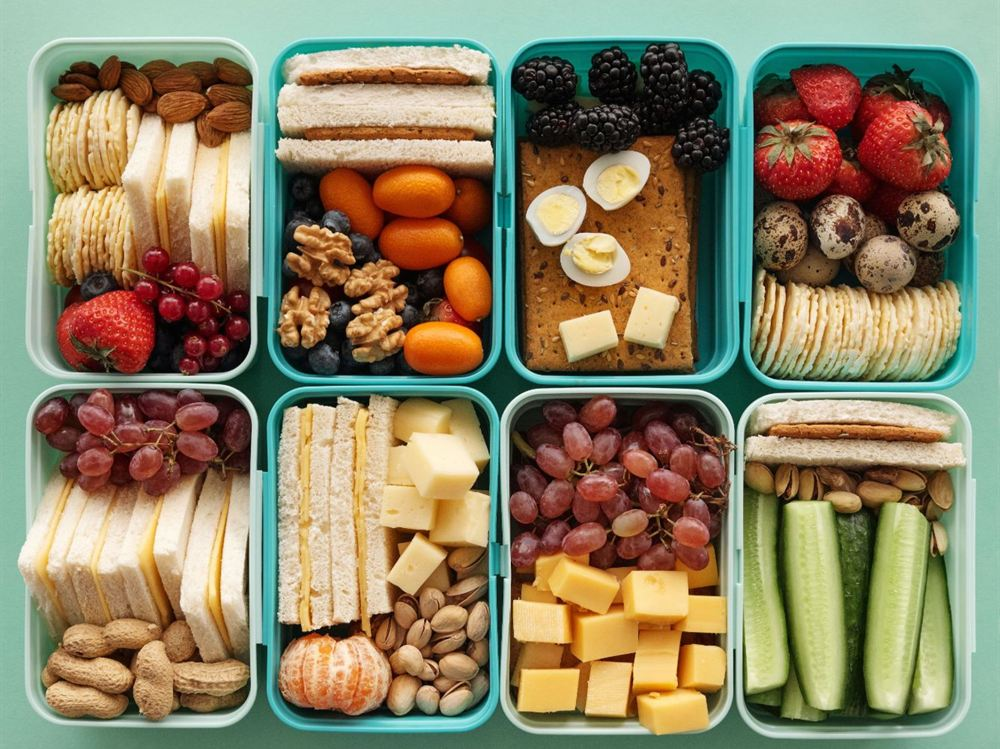
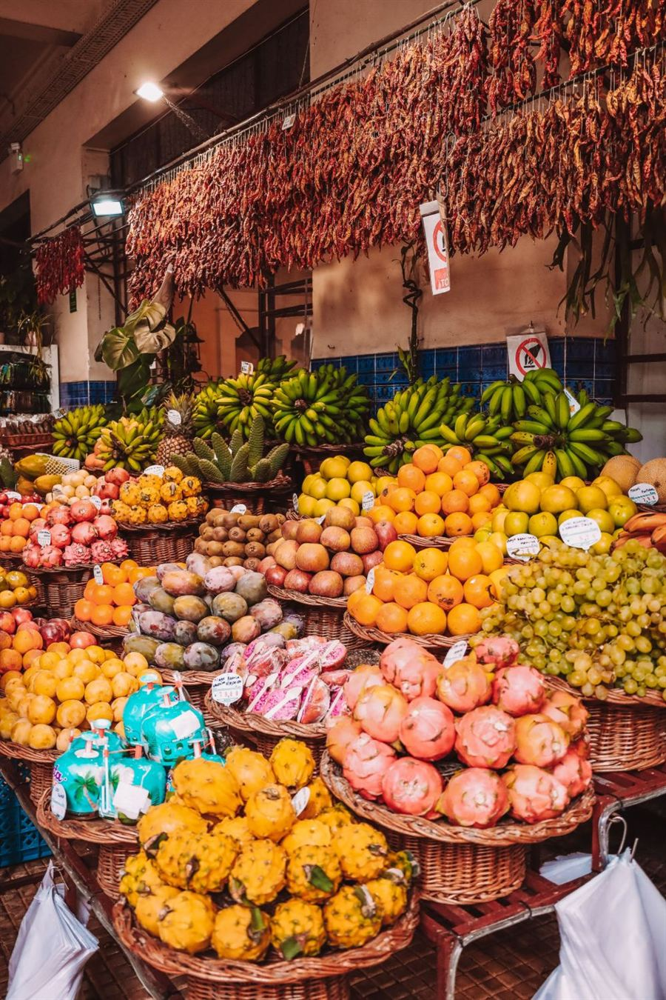
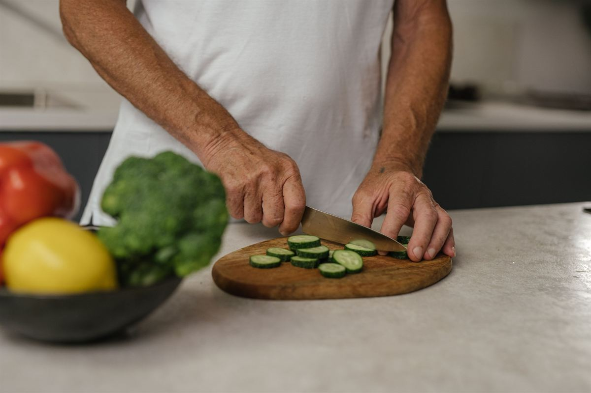
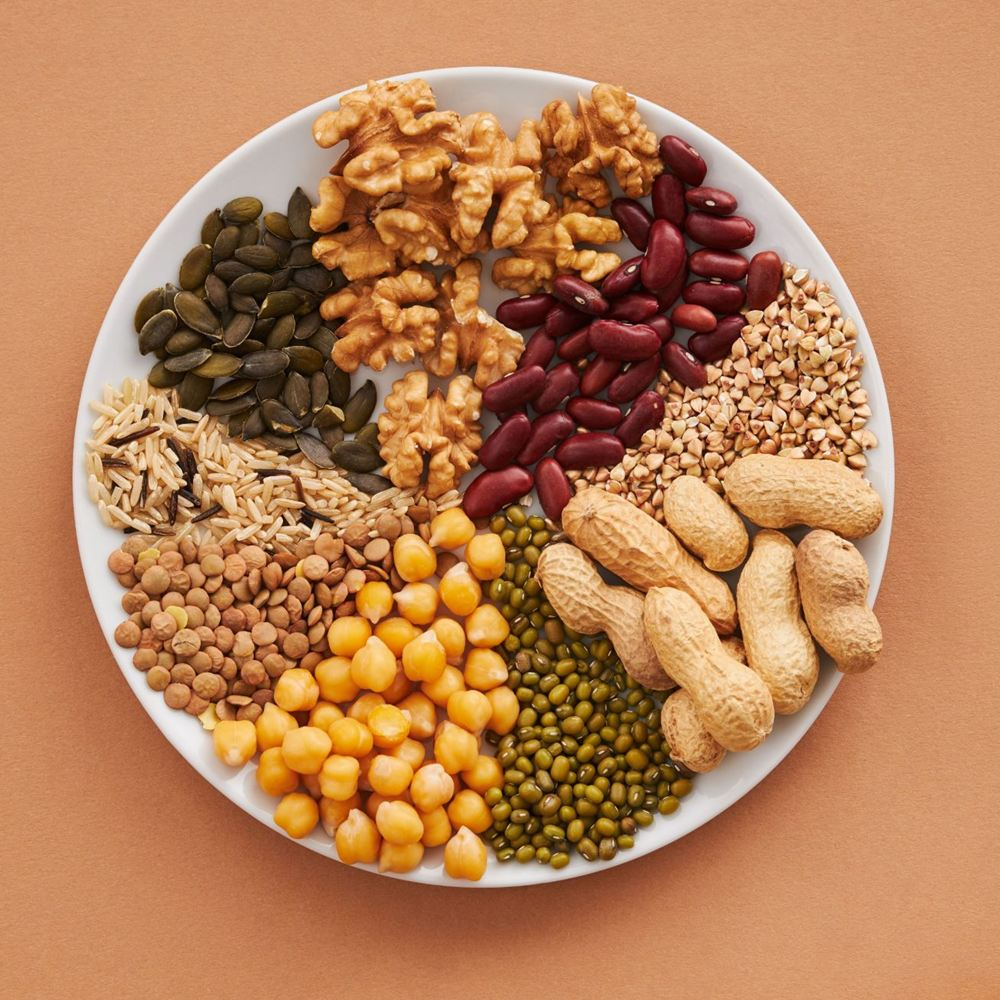
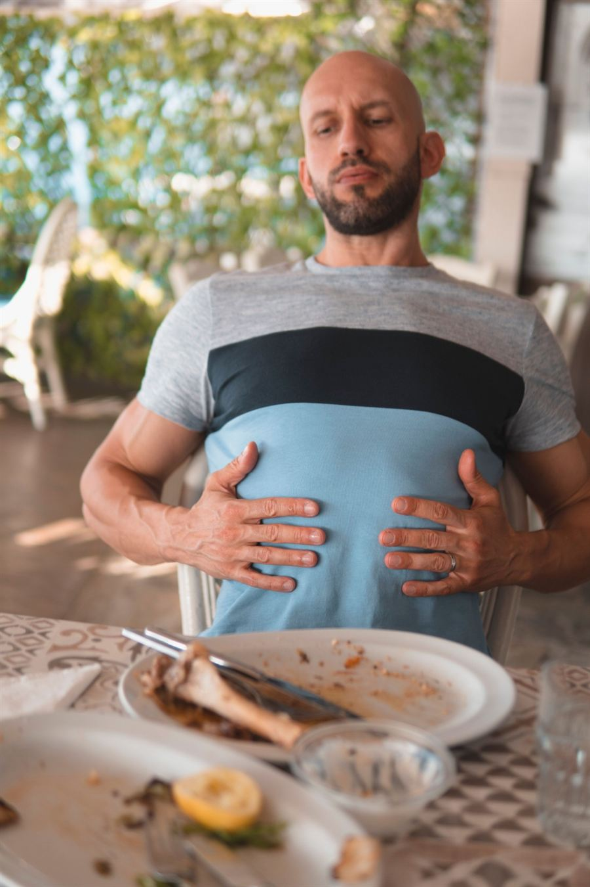

Emagrecer sem passar fome
Sem cortar o arroz, o pão ou o churrasco de domingo. A gente ajusta a quantidade e a rotina, não a sua vida.
Prato FeitoNutrição · Setor Sul, Goiânia
Pacientevocê
Nutrição sem dieta da moda e sem terrorismo. O seu prato feito de sempre, ajustado pro seu objetivo e pra sua rotina.
Prato Feito NutriçãoCRN-1 · nº do profissional
Segunda a sábado, a partir das 8h
Demo · Porta StudioToque num alimento pra carimbar de novo.
A consulta
A consulta parte da sua rotina e do que você gosta de comer. O plano sai daí, com comida que você encontra no mercado do bairro.
Rotina, horários, o que tem na sua geladeira, exames recentes e o seu objetivo. Sem julgamento sobre o que você come hoje.
Peso, medidas e bioimpedância, se fizer sentido pra você. Tem gente que prefere nem olhar a balança, e tudo bem.
Cardápio da semana, lista de substituições e lista de compras, no aplicativo e em PDF pra imprimir e pôr na geladeira.
No retorno a gente ajusta o que não funcionou. Entre uma consulta e outra, as dúvidas vão pelo WhatsApp.

O plano
Cada item do plano vem com substituições equivalentes, em medida caseira. Enjoou do pão? Troca pela tapioca. Toque em trocar pra ver.
terça-feira · exemplo
Exemplo para demonstração. Plano alimentar é individual e só sai depois da consulta.




Pra quem é
Do emagrecimento sem sofrimento ao intestino que não funciona. O plano muda conforme o seu objetivo.

Sem cortar o arroz, o pão ou o churrasco de domingo. A gente ajusta a quantidade e a rotina, não a sua vida.

Inchaço, gases e intestino preso têm muito a ver com o que vai no prato. Dá pra melhorar sem cortar tudo.
Proteína na medida certa, com comida de verdade antes de pensar em suplemento.
O que comer em cada fase, sem neura e com os exames em dia.
Plano feito junto com os seus exames, pra glicemia e colesterol entrarem nos eixos.
Ferro, vitamina B12 e proteína sem carne, com feijão, grão-de-bico e o que mais você gosta.
Consulta online
O mesmo cuidado da consulta presencial, por vídeo, de qualquer cidade.
Avaliações
Aguardando avaliaçõesQuando o site for do seu consultório, a nota e os comentários do Google aparecem neste espaço. A gente não inventa depoimento de paciente.
Valores
60 min, com avaliação
60 min, por vídeo
30 min, presencial ou online
1 consulta, 2 retornos e WhatsApp
Pix ou cartão em até 3x. O consultório emite recibo pra reembolso do plano de saúde. Valores de exemplo, para demonstração.
Onde fica
Segunda a sábado, a partir das 8h
Receita praa semana que vem
Chama no WhatsApp, conta o seu objetivo e escolhe se prefere presencial ou online. A primeira consulta já sai com data marcada.